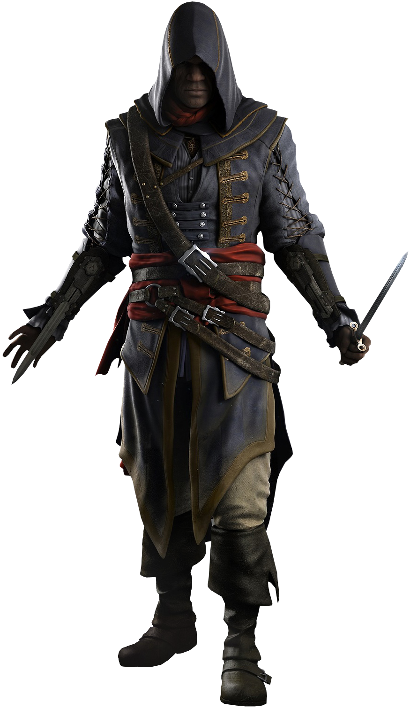

Эдвард Джеймс Кенуэй — английский капер, пират и ассассин. Сын фермера Бернарда Кенуэя, отец Хэйтема Кенуэя. Также является дедом Коннора Кенуэя и дальним предком Дезмонда Майлса. Капитан корабля "Галка". Эдвард Кенуэй родился 10 марта 1693 года в Суонси, Уэльс. Его отец Бернард Кенуэй был родом из Манчестера, а мать, Лайнетт Хопкинс – из Кардиффа. К тому моменту, когда Эдварду исполнилось десять лет, его отец перевез всю семью на небольшую ферму в окрестностях портового города Бристоля, на юго-западе Англии Переезд тяжело отразился на Эдварде. Лишенный общения со старыми друзьями, он никак не мог усидеть на месте, пытаясь найти выход для своей необузданной энергии. Уже будучи подростком, он все больше времени проводил не на ферме, а в городе. К шестнадцати годам он променял жизнь успешного фермера на безнадежное дурачество и часто увиливал от исполнения своих домашних обязанностей, проводя время в сомнительных компаниях и тавернах. В конце 1711 года, когда Эдварду было семнадцать лет, он встретил Кэролайн Скотт, женщину скромного, но стабильного достатка, которая также была старше Эдварда на два года. Близкими друзьями они стали не сразу, так как Кэролайн уже была обещана в жены сыну богатого управляющего Ост-Индской компании. Но, в конце концов, обаяние Эдварда одержало верх, и они с Кэролайн поженились через год после знакомства, в 1712 году. Но семейное благополучие продлилось недолго, грандиозные мечты и самолюбие помешали заботиться Эдварду о семье. Спустя всего один год он вернулся к своим дурным привычкам – пьянству, дракам и безделью. В этот период Эдвард вспомнил о своей старой идее пойти с приватирским флотом в Вест-Индию, чтобы воевать против испанцев и разбогатеть на этом. К лету 1712 года Кэролайн, будучи разумной и осмотрительной, поняла, что отъезд супруга неизбежен. Она не хотела принимать участия в безрассудном плане Эдварда, и потому бросила его и вернулась к родителям. Там она узнала, что беременна от Эдварда, и вскоре родила дочь Дженнифер. Но Эдварду Кэролайн приняла решение не говорить об этом.
Адевале — пират и Ассассин, родом из Тринидада, где он был рабом. Является дедушкой Гаитянского ассассина Эсеоса, а также дальним предком Милтона Джонса, сотрудника Абстерго Индастриз. В начале XVIII-го века служил квартермейстером у капитана Эдварда Кенуэя на борту корабля "Галка". Позже он стал капитаном собственного корабля "Виктуар", а позже корабля "Эксперто Креде" в 1735 году. В том же году Адевале помог Сопротивлению Маронов в Сан-Доминго. Адевале родился в землях йороба в 1692 году, в семье порабощенных огони, и еще в детстве был продан богатому плантатору. До подросткового возраста оставался на плантации, работал на полях, всегда составляя в голове планы побега, но тревожась, что бегать потом придется всю жизнь. Тем не менее удача повернулась к Адевале лицом, дав ему знак, которого он ждал. В 1708 на плантацию напал отряд буканьеров. Они хватали сырой тростник, готовый сахар и все деньги, которые могли найти. Увидев в этом свой шанс, Адевале украл ящик сахара и закинул его на борт одного из баркасов, на которых пришли буканьеры. Буканьеры удивились, увидев в своих рядах раба, но были рады помощи и взяли Адевале с собой. С этой первой командой Адевале бороздил моря много лет, быстро освоив морское дело. Он был благодарен за возможность учится и делать, что хочешь. Пусть и у буканьеров хватало свойственных тому времени предубеждений, по крайней мере, Адевале теперь мог дать отпор обидчикам.
Адевале — пират и Ассассин, родом из Тринидада, где он был рабом. Является дедушкой Гаитянского ассассина Эсеоса, а также дальним предком Милтона Джонса, сотрудника Абстерго Индастриз. В начале XVIII-го века служил квартермейстером у капитана Эдварда Кенуэя на борту корабля "Галка". Позже он стал капитаном собственного корабля "Виктуар", а позже корабля "Эксперто Креде" в 1735 году. В том же году Адевале помог Сопротивлению Маронов в Сан-Доминго. Адевале родился в землях йороба в 1692 году, в семье порабощенных огони, и еще в детстве был продан богатому плантатору. До подросткового возраста оставался на плантации, работал на полях, всегда составляя в голове планы побега, но тревожась, что бегать потом придется всю жизнь. Тем не менее удача повернулась к Адевале лицом, дав ему знак, которого он ждал. В 1708 на плантацию напал отряд буканьеров. Они хватали сырой тростник, готовый сахар и все деньги, которые могли найти. Увидев в этом свой шанс, Адевале украл ящик сахара и закинул его на борт одного из баркасов, на которых пришли буканьеры. Буканьеры удивились, увидев в своих рядах раба, но были рады помощи и взяли Адевале с собой. С этой первой командой Адевале бороздил моря много лет, быстро освоив морское дело. Он был благодарен за возможность учится и делать, что хочешь. Пусть и у буканьеров хватало свойственных тому времени предубеждений, по крайней мере, Адевале теперь мог дать отпор обидчикам.